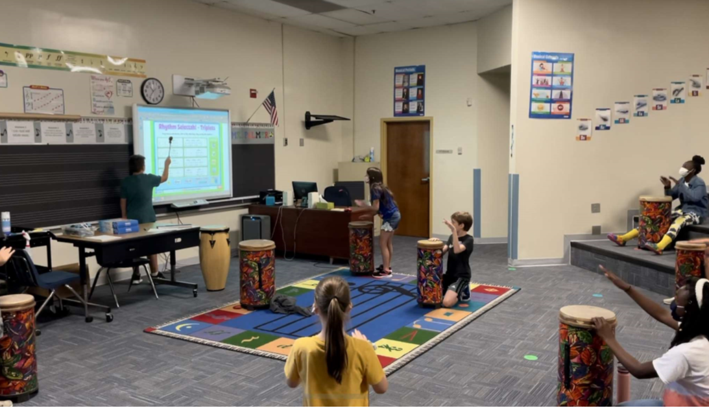

I'm Orion
a programmer.


I'm Orion Palmer. Currently I am a music educator at Chukker Creek Elementary. As a music teacher I service the entire school and have developed multiple curriculums and programs to elevate and show the skills of my students in a variety of mediums. This along with many of my involvement with the community over the course of this past year and a half in this position have led to me earning the title of Teacher of the Year at my school.
At this time however, I'm looking to find other ways to provide educational opportunities to adult learners in different field. If I am able to, I would love to be responsible in helping create programs that can assist learners in becoming more adept with musical processes.

I have taken a great interest in programming over this past month, using my weekend mornings and spare hours on the weekdays from grading assignments to study coding and learn more from professionals in the field. At this time I am adept in both HTML and CSS. In addition to this I becoming highly familiar with the process documentation and learning how to independently search and create solutions of problems I encounter while I am coding. My next step is to learn JavaScript so that I can begin building 6 landing pages by the end of my third month of learning. I do not intend to slow down, I intend to learn, I intend to be worthy, I intend to demonstrate my grit and my capability to adapt and change and fulfill a new calling.

Teaching has been a profession that I have dedicated the past decade of my life to as demonstrated by earning a Bachelors and Master degree in Music Education and becoming a Teacher of the Year recipient. I am highly skill in a variety of instructional practices and mediums as my work prior and during the pandemic has taught me to be flexible and adapt to the circumstances in order to meet data-driven goals and provide high-quality services to stakeholders.
The prospect of achieving more with your company is only one message away. Let's talk and make a plan together on how I help achieve your goals!
©Orion Palmer